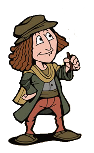

En su condición de dibujante, pintor y escultor, Leonardo sintió la necesidad de conocer a fondo la anatomía humana.
Desafiando la tradición eclesiástica, que lo calificó de hereje, se procuró cuerpos, que luego diseccionaba, haciendo después unos dibujos anatómicos que, aparte de su exactitud, constituyen verdaderas obras de arte.
A continuación, algunos de esos asombrosos dibujos:
Así,
Hizo moldes de cera de los ventrículos del cerebro.
Descubrió cómo la sangre recorre constantemente todo el cuerpo humano, llevando el alimento a cada una de sus partes y retirando los deshechos.
Estudió los músculos del corazón e hizo dibujos de las válvulas, lo que parece demostrar que conoció su funcionamiento.
Estudió la estructura y funcionamiento de los ojos, los cuales denominó como "las ventanas del alma".
De esta forma, dibujo el conocido Hombre de Vitruvio:
Este dibujo: "Las proporciones del hombre", está basado en las teorías del arquitecto romano Marco Vitrubio sobre la aplicación de la sección áurea al ser humano.
Las notas de Leonardo Da Vinci que acompañan el dibujo determinan las proporciones del cuerpo humano de acuerdo con el texto de Vitruvio. A continuación,algunas de ellas sobre el propio dibujo:

Lo cierto de todo esto es que en este momento tú estás intentando comprobar con tu propio cuerpo si estas medidas son reales... La verdad es que eso sería un muy buen ejercicio.